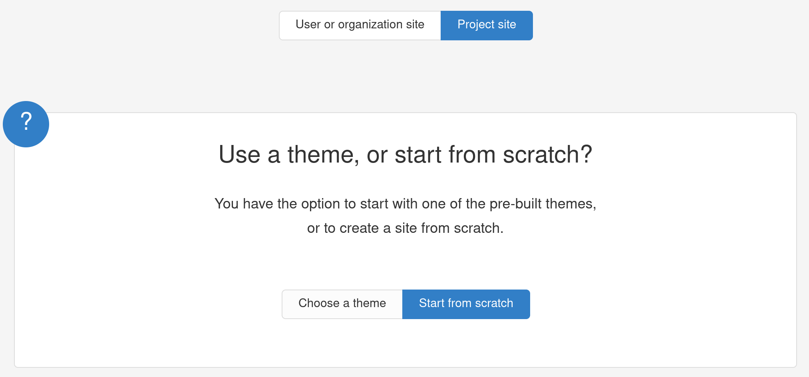

GitHub
Een Platform voor Versiebeheer en Samenwerking
GitHub is een krachtig platform voor softwareontwikkeling en versiebeheer, gebaseerd op Git. Het wordt wereldwijd gebruikt door ontwikkelaars, bedrijven en open-source projecten. Met GitHub kun je:
- Je code opslaan en bijhouden hoe deze in de loop van de tijd verandert.
- Samenwerken met anderen door middel van pull requests en code reviews.
- Issues en projectbeheerfuncties gebruiken om werk te organiseren.
GitHub maakt het gemakkelijk om je werk met anderen te delen, of je nu alleen werkt of in een team.
GitHub Pages
Gratis Hosting voor Statische Websites
GitHub Pages is een gratis service van GitHub waarmee je eenvoudig statische websites kunt publiceren.
Omdat GitHub Pages statische bestanden host (zoals HTML, CSS, JavaScript en Markdown), is het supersnel en betrouwbaar. Bovendien hoef je geen complexe serverconfiguraties te beheren.
Waarom een Markdown-Website Publiceren op GitHub Pages?
Markdown is een eenvoudige en leesbare opmaaktaal waarmee je gestructureerde documenten kunt maken zonder dat je HTML hoeft te schrijven. Het combineren van Markdown met GitHub Pages biedt verschillende voordelen:
Eenvoudig te schrijven en te onderhouden
Markdown is veel eenvoudiger dan HTML. Je kunt je website onderhouden alsof je een tekstbestand bewerkt, zonder gedoe met complexe code. Dit maakt het toegankelijk voor zowel beginners als gevorderden.
Automatische conversie naar HTML
GitHub Pages ondersteunt Jekyll, een tool die automatisch je Markdown-bestanden omzet in een nette website. Hierdoor hoef je je geen zorgen te maken over het handmatig omzetten van bestanden.
Perfect voor documentatie
Markdown is ideaal voor documentatie, zoals handleidingen of projectbeschrijvingen. Veel open-source projecten hosten hun documentatie via GitHub Pages, omdat het eenvoudig te beheren is.
Directe versiegeschiedenis en samenwerking
Omdat je Markdown-bestanden in een GitHub-repository opslaat, kun je altijd teruggaan naar eerdere versies en samenwerken met anderen via pull requests. Dit is vooral handig als je met een team werkt aan een wiki, handleiding of blog.
Gratis en snel online
In tegenstelling tot veel andere hostingdiensten is GitHub Pages gratis en snel. Je hoeft geen domeinnaam of serverruimte te kopen, en je site wordt gehost op GitHub’s betrouwbare infrastructuur.
Makkelijk aanpasbaar met thema’s en CSS
Wil je een mooiere uitstraling? Je kunt eenvoudig Jekyll-thema’s gebruiken of je eigen CSS toevoegen om de stijl van je site aan te passen. Dit geeft je flexibiliteit zonder de complexiteit van een traditionele website.
Hoe publiceer je Markdown-bestanden via GitHub Pages?
Via deze Officiële guide leer je een markdown project te publiceren via een GitHub-repository.
Kies Project site en Start from scratch .
